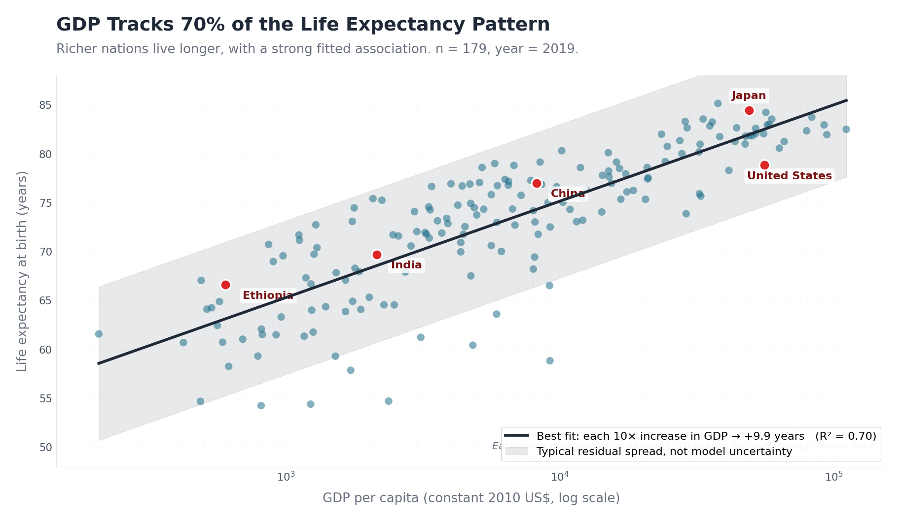
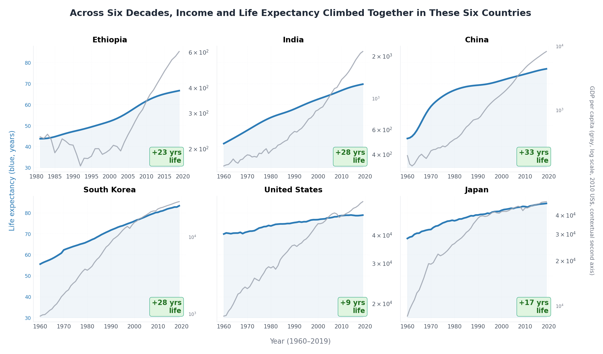
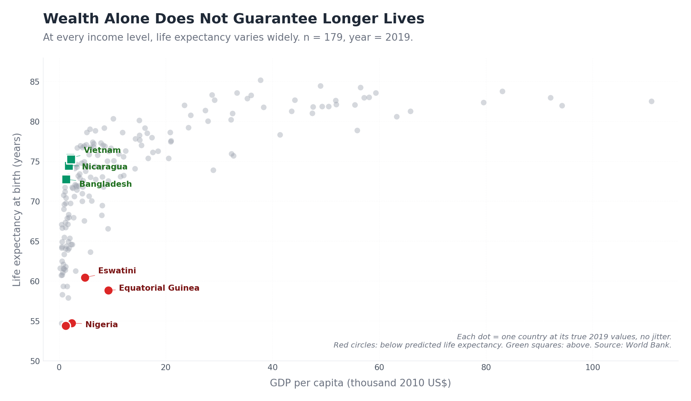
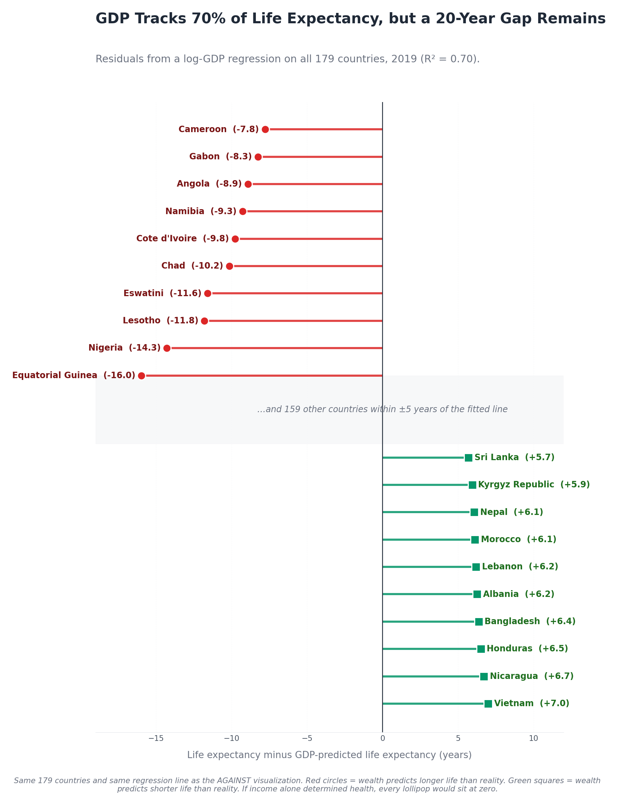

When the Same World Bank Data Can Tell Two Stories
Proposition
Two visualizations argue this is broadly true. Two argue it misses too much. All four draw from the same 179 country, 2019 cross section so the contest is about visual rhetoric, not country selection.
FOR the proposition
A log GDP regression on the 2019 cross section explains 70 percent of the variance in life expectancy. A six country longitudinal panel shows life expectancy rising alongside GDP for decades. If GDP is the variable you have, GDP is the variable you should use.
AGAINST the proposition
The same data on a linear axis without a fitted curve looks shapeless. Plotting the residuals from the FOR side’s own model surfaces a 20 year gap between countries the model fits worst.
FOR Visualization 1: GDP tracks 70% of the pattern
All 179 countries plotted on a logarithmic GDP axis with an OLS fit of life expectancy on log10(GDP). The fit explains 70 percent of the variance.

- Each blue dot is one country in 2019, plotted at its true GDP and life expectancy.
- Black line is the OLS fit on log10(GDP). Slope and R² appear in the legend.
- Shaded band is typical residual spread, not a confidence interval on the fit.
Design decisions
-
+1.5
Logarithmic x axis on GDP per capita earnest GDP per capita is exponential across countries; log is the conventional encoding. It distributes points evenly and reveals the underlying Preston curve. The contrast with the AGAINST side’s linear axis is exactly how much rhetorical weight axis choice carries.
-
+1
Fitted regression line with R² disclosed in the legend earnest Life expectancy = 9.9 × log10(GDP) + intercept, R² = 0.70. Disclosing the goodness of fit lets the reader judge the strength of the relationship rather than estimate it by eye.
-
0
Shaded band labeled honestly mixed The band is mean fit ± 1.96 residual standard deviations. The chart legend reads "Typical residual spread, not model uncertainty" so readers do not mistake it for a formal regression confidence interval.
-
−1.5
Slanted action title deceptive "GDP Tracks 70% of the Life Expectancy Pattern" is true on the cross section but nudges the reader toward reading 70 percent as the whole story. We chose "tracks" rather than "explains" or "drives" to avoid causal overclaiming while keeping the title persuasive.
-
−0.5
Annotate only countries that anchor the curve mixed Five countries (Ethiopia, India, China, United States, Japan) span the income range and sit close to the fit, training the eye to read the chart as a curve rather than as a cloud. The AGAINST side’s outliers are not labeled here, an asymmetric attention rather than asymmetric data.
FOR Visualization 2: across decades, income and life expectancy climbed together
A longitudinal panel for six countries spanning the full income range. As GDP climbs, life expectancy climbs alongside, in every panel shown. Gains range from +9 years (United States) to +33 years (China).

- Six panels, one per country. Same y axis (28 to 88 years) on every panel for honest comparison.
- Blue line = life expectancy. Gray line = GDP per capita on a log secondary axis (context, not directly comparable).
- Time range: 1960 to 2019 where data are available. Ethiopia’s panel begins in 1981 because the indicator is missing for earlier years.
Design decisions
-
+1
Same y axis range across all six panels earnest Identical 28 to 88 year limits make magnitudes comparable across countries. Ethiopia’s gain reads as visually as dramatic as China’s. Per panel auto scaling would have flattened Ethiopia and inflated the United States in a way that distorts the actual story.
-
+0.5
Logarithmic GDP on a contextual secondary axis earnest GDP rose by orders of magnitude in some panels (China went from roughly $200 to $8,000). Linear GDP would crush most trajectories into an early flat line. The GDP axis is labeled as contextual rather than as a directly comparable vertical measure.
-
−2
Hand picked six countries with strong upward arcs deceptive The most ethically questionable choice on the FOR side. Russia in the 1990s, Zimbabwe in the 2000s, Venezuela in the 2010s, and the Soviet collapse would each show life expectancy falling as GDP fell or stagnated. Selecting six countries whose paths all bend the same way produces a triumphal narrative the underlying data does not uniformly support.
-
−0.5
Cautious title that names the sample mixed The title is "Across Six Decades, Income and Life Expectancy Climbed Together in These Six Countries." An earlier draft read "Every Path Bends Toward Longer Life," which overclaimed by implying all paths. The current title keeps the persuasive framing while being defensible against a reader who notices the sample size.
-
+0.5
Annotation showing total life expectancy gain per country earnest Each panel carries an explicit "+9 yrs" or "+33 yrs" badge. The numbers are real and correctly computed. The only slant is that the comparison is across countries that all gained, which the previous decision discloses.
AGAINST Visualization 1: wealth alone does not guarantee longer lives
The same 179 countries, the same year, the same variables. The only changes from the FOR side’s first chart are the axis scaling, the absence of a fitted curve, outlier highlights, and the title. The result reads as a shapeless cloud.

- Each gray dot is one country at its true 2019 values, no jitter.
- Red circles = largest negative residuals from the log GDP fit. Green squares = largest positive residuals. Shape redundancy keeps the encoding readable for color blind viewers.
- X axis is linear, so most countries pile up on the left wall.
Design decisions
-
−1.5
Linear x axis on GDP per capita deceptive GDP per capita spans almost three orders of magnitude. On a linear axis roughly 90 percent of countries collapse into a vertical wall on the left, and the Preston curve becomes invisible. Linear was more visually misleading than a square root alternative without looking obviously broken.
-
−1.5
Highlight only the largest residuals from the log GDP fit deceptive The eight highlighted countries are the largest negative and positive residuals. Highlighting only the outliers steers the reader toward "no relationship" rather than "strong relationship with notable exceptions." Showing every country in red or green would have been more honest but less persuasive.
-
−1
No fit line and no R² disclosed on this chart deceptive A fitted log GDP line would yield R² = 0.70 and immediately undercut the chart’s message. Omitting the fit forces the reader to read the cloud by eye, where the linear axis already obscures the relationship. The omission is invisible to a casual reader.
-
−1
Slanted title deceptive "Wealth Alone Does Not Guarantee Longer Lives" is technically true, but it primes the reader to look for variation rather than trend. We softened the language from an earlier "Wealth Is No Cure" because the latter felt too slogan-like and could have backfired by signaling deception too obviously.
-
−0.5
Mild y axis truncation at 50 years mixed The full life expectancy range is roughly 53 to 85 years. Starting the y axis at 50 rather than 0 or 60 compresses the visible vertical spread slightly, making the cloud look more disorderly. Mild but it is the same family of choice the assignment prompt flags as a typical deceptive move.
AGAINST Visualization 2: GDP tracks 70%, but a 20 year gap remains
The AGAINST side accepts the FOR side’s regression line on its own terms, then plots the residuals. Even when GDP explains a great deal of the variance, some countries still perform much better or much worse than the model predicts. Equatorial Guinea is sixteen years below its predicted life expectancy. Vietnam is seven above. The unexplained 30 percent is not noise; it is a 20 year range across countries the model fits worst.

- Built directly from the FOR side’s log GDP regression: each lollipop is the actual life expectancy minus the model’s prediction.
- Red circles = the 10 worst residuals (Equatorial Guinea worst at −16). Green squares = the 10 best (Vietnam best at +7).
- Gray band = 159 other countries the model fits within ±5 years.
Design decisions
-
+2
Use the opposing side’s own regression line as the baseline earnest We did not invent a new model. We took the FOR side’s log GDP fit and plotted what it leaves out. This is steel manning, not strawmanning. A reader cannot dismiss the chart by saying "your model is wrong" because the model is the opponent’s.
-
−1
Show only the top 10 and bottom 10 residuals deceptive The middle 159 countries the model fits well are compressed into a single gray band. This suppresses the 88 percent of countries the model predicts well and elevates the 12 percent it misses. Showing all 179 lollipops became unreadable and self defeating.
-
−0.5
Diverging palette with mark shape redundancy mixed Red and green carry pre cognitive bad and good associations that load the chart emotionally. Shape redundancy (red circles vs green squares) and explicit text labels keep the encoding readable for color blind viewers.
-
−1.5
Title frames the unexplained variance as a 20 year gap deceptive The 20 year figure is the actual range from worst to best residual, but the framing converts a statistical residual into a humanitarian indictment. We chose this because residuals alone are emotionally inert.
-
+1
Disclose R² = 0.70 in the subtitle earnest The chart explicitly tells the reader that the model the residuals come from predicts 70 percent of life expectancy variance. A more deceptive version would have buried this number.
Reflection
The hardest part of this project was committing to plot the same data on both sides. Once we did, the rhetorical machinery became visible. The FOR and AGAINST first charts share every single data point. The proposition flips because of the x axis scale, a fitted curve we drew or did not draw, and a title we wrote. Working in this constraint clarified what counts as a deceptive technique versus a fair editorial choice. A log axis is not deceptive. A linear axis is not deceptive. But choosing one of them while writing a title that depends on the reader not noticing the choice is. The most satisfying chart to build was AGAINST Visualization 2, which uses the FOR side’s own regression line to plot the residuals it leaves behind, because it argues from inside the opponent’s premises rather than swapping them out.
What surprised us was how much of the persuasion lived in things we did not draw. AGAINST chart 1 is persuasive partly because there is no regression line on it. Adding the same R² = 0.70 line that appears on FOR chart 1 would single handedly undo the AGAINST argument. That asymmetric omission is, in some ways, more consequential than any positively misleading element of either chart. FOR chart 2 was the inverse temptation: hand picking six countries whose trajectories all bent the right way produces a clean monotonic story that is also the project’s strongest omission. Russia in the 1990s and the post Soviet life expectancy collapse would have made an "every path" title false; we chose softer wording for that reason.
Our working definition of ethical visualization is this: a chart is ethical when the reader, given enough time, would still accept the framing (the axes, the fits, the annotations, the country selection, the title) as a defensible reading of the data. A chart is misleading when its persuasive force depends on the reader not having that time. The line we draw between persuasion and deception is the line between framing choices we would defend in public to a critical reader and framing choices that need the reader’s inattention to survive. By that test, AGAINST Visualization 2 is the most ethically defensible chart in this project (it uses the opponent’s own model and discloses R²), and FOR Visualization 2 is the most ethically questionable (it claims a six country pattern as if it were a general law). All four are persuasive, but they are not equally honest about it.
Methodology and validation
- Source files:
World Bank Human Development Indicators,
specifically
economy-and-growth.csvandsocial-development.csv. - Indicators:
NY.GDP.PCAP.KD(GDP per capita, constant 2010 US$). For life expectancy, the cleaned source files do not include the World Bank’s combined total indicatorSP.DYN.LE00.IN, so we computed it as the unweighted mean ofSP.DYN.LE00.MA.IN(male) andSP.DYN.LE00.FE.IN(female). The result differs from the official total by roughly 0.1 years and does not change any conclusion. - Time slice: three of the four charts use the 2019 cross section. The longitudinal FOR chart 2 extends to 1960 to 2019 where data are available.
- Country universe: 179 entities for which both indicators are non null in 2019. Aggregate rows ("World", "OECD members", regional groupings) excluded.
- Joins and nulls: source files contain zero duplicate
(Country Name, Year)rows. Inner join then drop nulls. Identical filter across all four charts. - Validation pass: checked duplicate keys, null handling, anchor country values against published World Bank figures, and recomputed R² = 0.70.
- Fit: OLS of life expectancy on log10(GDP). Slope = +9.9 years per 10x increase in GDP, R² = 0.70. Reused on FOR chart 1 (visualized) and AGAINST chart 2 (residuals).
- Shaded band on FOR chart 1: mean fit ± 1.96 standard deviations of residuals. This is a typical residual spread, not a regression confidence interval. Labeled as such inside the chart.
- No jitter: every scatter point sits at its true 2019 value.
- Color blindness: red circles vs. green squares (shape redundancy) plus explicit text labels on AGAINST chart 1 and AGAINST chart 2.
- Reproducibility:
generate_charts.pyat the repo root, with style helpers underhelpers/, regenerates every chart on this page from the source CSVs.